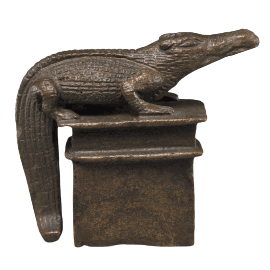
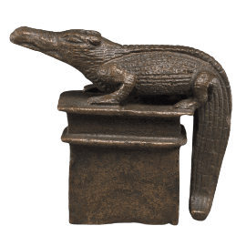

One with a Raging Heart


resources & history
Ancient Egypt Online
Per Sebek
Papyrus Ramesseum 6, Frame 1 | 2 | 3 | 4 | 5 | 6 | 7
modern hymns & devotional writing
Adoration of Sobek by starsandepithets
Flashing Scales by idi-the-noof
Hymn to Sobek by godsofsandandwater
initiation by rediankhesi
On the Riverbank originally by Sobekreshuten
Prayer to Sobek by hornedsnakeofanwyn
Works from Cow of Gold 1 |
2
Works by dustyscarabs 1 |
2 |
3
Works by hesy-bes (aka mery-set-re) 1 |
2 |
3 |
4
Works by lovedeluge 1 |
2
Writing from deactivated blogs 1 |
2 |
3 |
4 |
5 |
6
Lord of the Carnelian Temple: A Devotional in Honor of Sobek

other e-shrines
Croc of Bakhu
Fish Trap
Love Deluge
credits
 
header image from one letter words
food offerings from sweet room
incense offering from gifcities
background from scribbles pixels
most images credited on my mythology graphics page